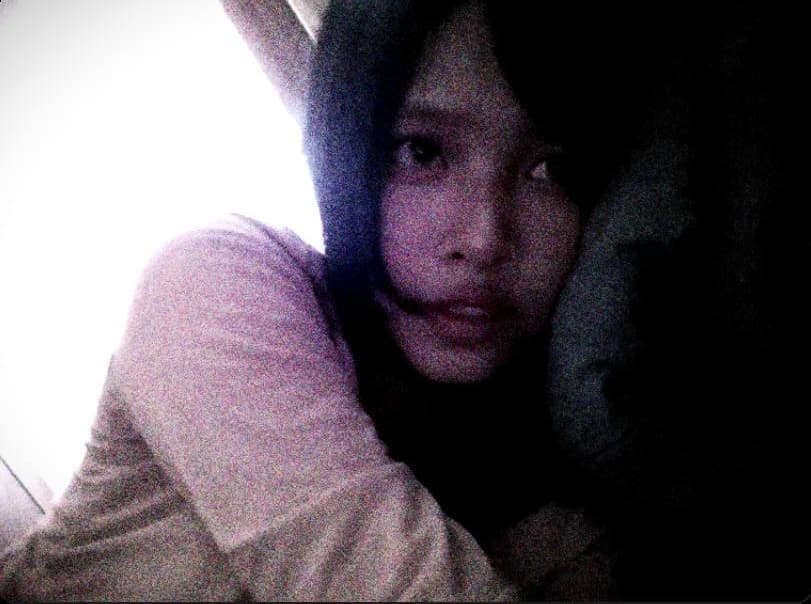
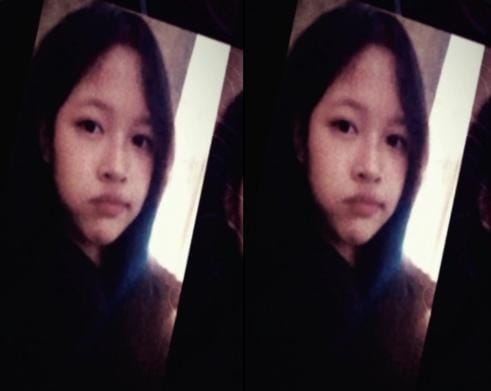

sebuah persembahan kecil
"Sebuah kumpulan halaman kecil yang menyimpan hal-hal yang terlalu berharga untuk dilupakan."

saat dunia terasa riuh
jeda yang paling menenangkan
dalam setiap sudut cerita

hal-hal kecil yang berharga
dan hari ini mengalir tenang
"Kalau waktu bisa dilipat seperti halaman buku, aku akan menyimpan hari-hari bersamamu di bagian yang paling sering kubaca ulang."
"Kamu tidak datang membawa hal-hal besar. Hanya cara sederhana yang pelan-pelan membuat banyak hal terasa berarti."
"Ada orang yang hadir seperti jawaban. Ada juga yang hadir seperti rumah. Bagiku, kamu adalah keduanya."
"Beberapa kenangan tidak meminta untuk diulang, hanya disimpan dengan baik. Dan entah kenapa, hampir semuanya tentang kamu."
"Barangkali yang membuat sebuah hari terasa istimewa bukanlah peristiwanya, melainkan siapa yang ada di dalamnya."
"percakapan-percakapan kecil acak sebelum larut malam denganku selalu menemukan jalannya untuk menetap lebih lama di kepala."
"langit sore itu biasa saja, sampai sudut mataku menangkap bagaimana cahaya matahari jatuh tepat di senyuman tipismu."
"dunia bergerak terburu-buru, namun bersamamu, aku seperti menemukan ruang tunggu yang tenang dan tidak melelahkan."
"kita adalah kumpulan dari hal-hal sederhana—tawa yang lepas, sunyi yang tidak canggung, dan langkah kaki yang selaras."
"tidak perlu komedi megah atau perayaan besar, dalam tenang bersamamu, jiwaku merayakan hal-hal yang paling sunyi."
menatap kembali lembaran-lembaran yang kita bangun, aku menyadari bahwa kedekatan kita tidak pernah berakar dari hal-hal besar yang terencana dengan megah. ia tumbuh dari keheningan yang nyaman, dari bertukar cerita acak tanpa takut dinilai, serta dari bagaimana caramu menyederhanakan rumitnya kepalaku hanya dengan sebuah anggukan kecil.
kita telah melewati sekian banyak pergantian hari dengan ritme kita sendiri. terkadang lambat dan penuh perenungan, di lain waktu cepat dan penuh tawa lepas. setiap detiknya melukis struktur baru dalam caraku memandang arti kebersamaan yang dewasa dan tulus.
terima kasih telah menjadi bagian paling tenang dari perjalanan ini. semoga di hari-hari esok, langkah kita tetap saling menggenapi, menemukan keindahan dalam ketidaksengajaan, serta merawat hangat yang sama di setiap halaman baru yang akan kita buka bersama.
Dengan penuh sayang,
Fikri
Semoga saat kamu kembali ke sini suatu hari nanti, semua perasaan baik itu masih terasa sama hangatnya.